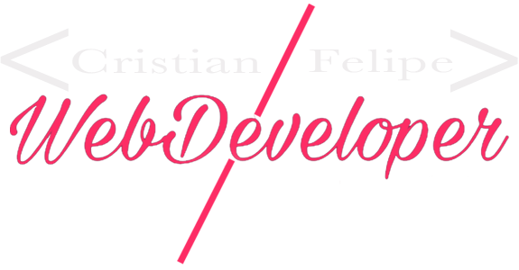

Tuve la oportunidad de trabajar por 3 años en el ambiente de Call Center con cuentas en Inglés de dos empresas, Convergys cuentas en Estados Unidos y Hewlett-Packard Inc (HP) con cuentas en United Kingdom (DXC Technology). Donde pude desarrollar mis habilidades como trabajador, líder y persona responsable de mis acciones y las acciones de mis compañeros de trabajo, también tuve que aprender muchos procesos y a utilizar diversas herramientas lo cual me hizo una persona que se adapta rápido a nuevas experiencias, siempre trabajando de la mejor manera.
Recientemente tengo tres títulos de educación avanzada, del INA y el CETAV, lo cual me motiva a seguir estudiando y a prepararme más. Espero llegar a trabajar y a aprender de la industria del Desarrollo Web en una empresa donde me puedan facilitar las herramientas necesarias para ser un mejor profesional. Me gustaría mucho trabajar y pagarme una preparación universitaria relacionada a Desarrollo Web apenas se me dé la oportunidad, ya que es una carrera que me apasiona.